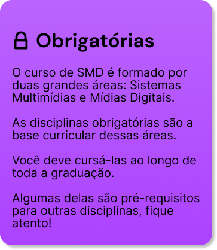
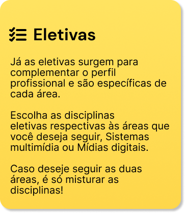
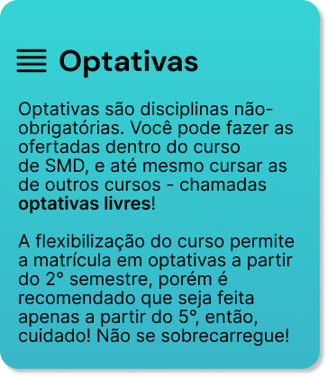
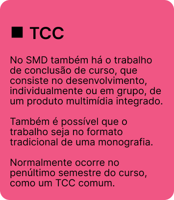

Como funciona a grade curricular do SMD?
No vídeo você confere sobre:
 Tipos de disciplinas
Tipos de disciplinas
 Créditos e horas
Créditos e horas
 Diferenças entre turnos
Diferenças entre turnos
Nossa grade curricular
Passando pro lado, você vai descobrir um pouquinho mais sobre cada componente da grade curricular do SMD :)





Esse é um erro muito comum no SMD! Para se formar, você precisa fazer no mínimo 4 cadeiras eletivas do quarto semestre e 3 cadeiras eletivas do quinto, exatamente nessa quantidade! Caso faça, por exemplo, cinco do quarto e duas do quinto, ainda faltarão cadeiras - uma do quinto.